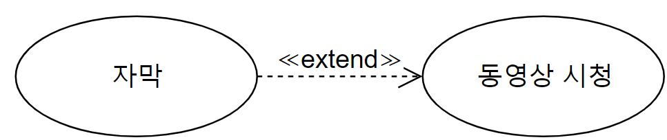

확장 관계(Extend)
확장 관계는 기존의 유스케이스를 수정하지 않고 새로운 요구사항을 추가로 표현하고자 할 때 사용합니다.
조금 더 자세하게 설명하겠습니다.
새로운 요구사항에 해당하는 이벤트 흐름을 별도의 유스케이스로 구성하여, 기존 유스케이스로부터 참조하도록 설정하는 관계를 의미합니다.
그렇기 때문에 확장 관계는 기준 유스케이스에 부가적으로 추가된 기능을 표현하기 위해 사용합니다.
예를 들어 유튜브에서 영상을 보다 자막 버튼을 눌러 영상에 자막을 띄울 수 있습니다. 기존 동영상 시청을 하는 유스케이스에서 자막이라는 별도의 유스케이스가 추가될 수 있는 것입니다.

표기법
'확장 기능 유스케이스'에서 '확장 대상 유스케이스' 방향으로 점선으로 된 화살표를 그리고, «extend»라고 표시를 해줍니다.